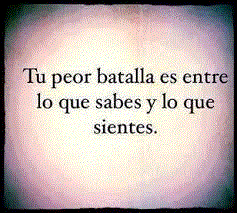
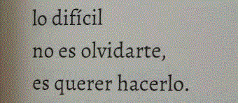
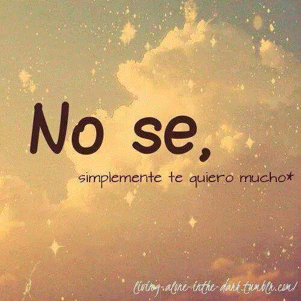
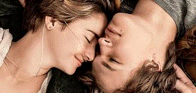

CAPITULOS BAJO LA MISMA ESTRELLA
1

A finales del invierno de mi decimoséptimo año de vida
mi madre llegó a la conclusión de que estaba deprimida
seguramente porque apenas salía de casa, pasaba mucho tiempo en la cama
leía el mismo libro una y otra vez, casi nunca comía y dedicaba
buena parte de mi abundante tiempo libre a pensar en la muerte.
Cuando leemos un folleto sobre el cáncer, una página web o lo que sea
vemos que sistemáticamente incluyen la depresión entre los efectos
colaterales del cáncer. Pero en realidad la depresión no es un efecto
colateral del cáncer. La depresión es un efecto colateral de estar
muriéndose. (El cáncer también es un efecto colateral de estar muriéndose).
La verdad es que casi todo lo es.) Aunque mi madre creía que debía
someterme a un tratamiento, así que me llevó a mi médico de cabecera
el doctor Jim, que estuvo de acuerdo en que estaba hundida en una depresión
total y paralizante, que había que cambiarme la medicación y que además
debía asistir todas las semanas a un grupo de apoyo.
El grupo de apoyo ponía en escena un elenco cambiante de personajes
en diversos estadios de enfermedad tumoral. ¿Por qué el elenco era cambiante?
Un efecto colateral de estar muriéndose. El grupo de apoyo era de lo más
deprimente, por supuesto. Se reunía cada miércoles en el sótano de una
iglesia episcopal de piedra con forma de cruz. Nos sentábamos en corro
justo en medio de la cruz, donde se habrían unido las dos tablas de madera
donde habría estado el corazón de Jesús. Me di cuenta porque Patrick el líder
del grupo de apoyo y la única persona en la sala que tenía más de
dieciocho años, hablaba sobre el corazón de Jesús en cada puñetera
reunión, y decía que nosotros, como jóvenes supervivientes del cáncer
nos sentábamos justo en el sagrado corazón de Cristo, y todo ese rollo.
En el corazón de Dios las cosas funcionaban así: los seis, o siete, o diez
chicos que formábamos el grupo entrábamos a pie o en silla de ruedas
echábamos mano a un decrépito surtido de galletas y limonada, nos sentábamos
en el «círculo de la confianza» y escuchábamos a Patrick, que nos contaba por
enésima vez la miserable y depresiva historia de su vida: que tuvo cáncer en
los huevos y pensaban que se moriría, pero no se murió, y ahora aquí está, todo
un adulto en el sótano de una iglesia en la ciudad que ocupa el puesto 137 de
la lista de las ciudades más bonitas de Estados Unidos, divorciado, adicto a
los videojuegos, casi sin amigos, que a duras penas se gana la vida
explotando su pasado cancerígeno, que intenta sacarse poco a poco un
máster que no mejorará sus expectativas laborales y que espera, como
todos nosotros, que caiga sobre él la espada de Damocles y le proporcione
el alivio del que se libró hace muchos años, cuando el cáncer le invadió los
cojones, pero le dejó lo que solo un alma muy generosa llamaría vida.
¡Y TAMBIÉN VOSOTROS PODÉIS TENER ESA GRAN SUERTE! Luego nos presentábamos:
nombre, edad, diagnóstico y cómo estábamos en ese momento.
«Me llamo Hazel —dije cuando me llegó el turno—. Dieciséis años.
Al principio tiroides, pero hace mucho hizo metástasis en los pulmones.
Y estoy muy bien.» Una vez concluido el círculo, Patrick siempre preguntaba
si alguien quería compartir algo. Y entonces empezaban las pajas en grupo
y todo el mundo hablaba de pelear, luchar, vencer, retroceder y hacerse
escáneres. Para ser justa con Patrick, debo decir que también nos dejaba
hablar de la muerte, aunque la mayoría de ellos no estaban muriéndose.
La mayoría de ellos llegarían a adultos, como Patrick. (Eso implica que
había bastante competitividad, porque todo el mundo quería derrotar no
solo el cáncer, sino también a las demás personas de la sala. Ya sé que
es absurdo, pero es como cuando te dicen que tienes, pongamos por caso,
un veinte por ciento de posibilidades de vivir cinco años. Entonces
entran en juego las matemáticas y calculas que es una posibilidad de
cada cinco… así que miras a tu alrededor y piensas lo que pensaría
cualquier persona sana: «Tengo que durar más que cuatro de estos capullos».)
Lo único positivo del grupo de apoyo era Isaac, un chico de cara alargada,
flacucho y con el pelo rubio y liso cayéndole sobre un ojo. Y sus ojos eran
el problema. Tenía un extraño y poco frecuente cáncer de ojos.
2

De niño le habían
extirpado un ojo, y ahora llevaba unas gafas de culo de
botella que hacían que sus ojos parecieran inmensos
(los dos, el real y el de cristal), como si toda su cara se
redujera a ese ojo falso y ese ojo verdadero, que te
miraban fijamente. Por lo que pude entender en las
raras ocasiones en que Isaac compartió sus
experiencias con el grupo, el cáncer se había
reproducido y amenazaba de muerte al ojo que le
quedaba.
Isaac y yo nos comunicábamos casi exclusivamente
con la mirada. Cada vez que alguien hablaba de dietas
contra el cáncer, de esnifar aleta de tiburón molida o
cosas por el estilo, me lanzaba una mirada. Yo movía
ligeramente la cabeza y resoplaba a modo de respuesta.
El grupo de apoyo era un coñazo, y a las pocas
semanas casi tenían que llevarme a rastras. De hecho, el
miércoles que conocí a Augustus Waters había hecho
todo lo posible por librarme de él mientras veía con mi
madre la tercera etapa de un maratón de doce horas de
America’s Nex Top Model, un reality show de la
temporada anterior, sobre chicas que quieren ser
modelos, que tengo que admitir que ya había visto,
pero me daba igual.
Yo: Me niego a ir al grupo de apoyo.
Mi madre: Uno de los síntomas de la depresión es no
tener interés en nada.
Yo: Déjame ver el reality, por favor. Es hacer algo.
Mi madre: Ver la televisión no es hacer algo.
Yo: Uf, mamá, por favor.
Mi madre: Hazel, eres una adolescente. Ya no eres
una niña pequeña. Tienes que hacer amigos, salir de
casa y vivir tu vida.
Yo: Si quieres que sea una adolescente, no me
mandes al grupo de apoyo. Cómprame un DNI falso
para que pueda ir a la disco, beber vodka y fumar
porros.
Mi madre: Para empezar, tú no fumas porros.
Yo: Mira, eso lo sabría si me consiguieras un DNI
falso.
Mi madre: Vas a ir al grupo de apoyo.
Yo: UFFFFFFFFFFFF.
Mi madre: Hazel, te mereces una vida.
Me callé, aunque no llegaba a entender qué tenía que
ver ir al grupo de apoyo con la vida. Aun así, acepté ir
después de negociar mi derecho a grabar los episodios
del reality que iba a perderme.
Fui al grupo de apoyo por la misma razón por la que
hacía tiempo había permitido que enfermeras que solo
habían estudiado un año y medio para sacarse el título
me envenenaran con productos químicos de nombres
exóticos: quería que mis padres estuvieran contentos.
Solo hay una cosa en el mundo más jodida que tener
cáncer a los dieciséis años, y es tener un hijo con
cáncer.
Mi madre se paró en doble fila detrás de la iglesia a las
16.56. Fingí trastear un segundo con mi bombona de
oxígeno solo para perder tiempo.
—¿Quieres que te la entre?
—No, está bien —contesté.
La bombona verde pesaba poco, y tenía un carrito
de metal para arrastrarla. Me lanzaba dos litros de
oxígeno por minuto a través de una cánula, un tubo
transparente que se dividía en dos a la altura del cuello,
me rodeaba las orejas y se introducía en mis fosas
nasales. Necesitaba ese artilugio porque mis pulmones
pasaban olímpicamente de ser pulmones.
—Te quiero —me dijo mi madre cuando salí del
coche.
—Y yo a ti, mamá. Nos vemos a las seis.
—¡Haz amigos! —exclamó por la ventanilla mientras
me alejaba.
No quise coger el ascensor porque en el grupo de
apoyo coger el ascensor significa que estás en las
últimas, así que bajé por la escalera. Cogí una galleta,
me llené un vaso de plástico de limonada y me di la
vuelta.
Un chico me miraba fijamente.
Estaba segura de que no lo había visto antes. Como
era alto y musculoso, la silla escolar de plástico en la
que estaba sentado parecía de juguete. Tenía el pelo de
color caoba, liso y corto. Parecía de mi edad, quizá un
año más, y había pegado el culo al fondo de la silla, en
una postura lamentable, con una mano medio metida en
un bolsillo de sus vaqueros oscuros.
Miré hacia otro lado, porque de pronto fui
consciente de que iba hecha una pena. Llevaba unos
vaqueros viejos que alguna vez habían sido ajustados,
pero que ahora me colgaban por todas partes, y una
camiseta amarilla de un grupo de música que ya no me
gustaba. En cuanto al pelo, lo llevaba cortado a lo paje,
y ni siquiera me había molestado en cepillármelo.
Además tenía los mofletes ridículamente inflados, como
una ardilla, un efecto colateral del tratamiento. Parecía
una persona de proporciones normales con un globo
por cabeza. Eso por no hablar de los tobillos
hinchados. Pero le lancé una mirada rápida y vi que sus
ojos seguían clavados en mí.
Me pregunté por qué la gente lo llamaba «contacto»
visual.
Me dirigí al corro y me senté al lado de Isaac, a dos
sillas de distancia del chico. Volví a echar un vistazo, y
seguía mirándome.
Os digo una cosa: estaba buenísimo. Si un chico que
no está bueno te mira de arriba abajo, en el mejor de
los casos te sientes incómoda, y, en el peor, te sientes
agredida. Pero un chico que está bueno… en fin.
Saqué el móvil y pulsé una tecla para ver la hora: las
16.59. El corro se completó con los infelices
adolescentes de doce a dieciocho años, y entonces
Patrick empezó la oración de la serenidad: «Dios,
concédeme serenidad para aceptar las cosas que no
puedo cambiar, valor para cambiar las que puedo
cambiar y sabiduría para entender la diferencia». El
chico seguía mirándome. Sentí que me ruborizaba.
Al final decidí que la mejor estrategia era mirarlo yo
a él. Al fin y al cabo, los chicos no tienen el monopolio
de las miradas. Así que lo observé detenidamente
mientras Patrick comentaba por enésima vez que era
impotente, etcétera, y enseguida la cosa se convirtió en
una competición de miradas. Al rato el chico sonrió y
desvió por fin sus ojos azules. Cuando volvió a
mirarme, alcé las cejas para darle a entender que yo
había ganado.
El chico encogió los hombros. Patrick siguió hasta
que por fin llegó el momento de las presentaciones.
—Isaac, quizá te gustaría empezar hoy. Sé que estás
pasando por un momento difícil.
—Sí —contestó Isaac—. Me llamo Isaac y tengo
diecisiete años. Parece que tienen que operarme dentro
de dos semanas. Después de la operación me quedaré
ciego. No me quejo ni nada de eso, porque sé que
muchos de vosotros estáis peor, pero, bueno, en fin,
ser ciego es una mierda. Aunque mi novia me ayuda, y
amigos como Augustus.
Señaló con la cabeza al chico, que ahora tenía
nombre.
—En fin —continuó diciendo Isaac mirándose las
manos, con las que había formado una especie de tipi
—, no hay nada que hacer.
—Puedes contar con nosotros, Isaac —dijo Patrick
—. Vamos a decírselo a Isaac, chicos.
Y hablamos todos a la vez:
—Puedes contar con nosotros, Isaac.
El siguiente fue Michael, de doce años. Tenía
leucemia. Siempre había tenido leucemia. Estaba bien.
(O eso dijo, aunque había cogido el ascensor.)
3

Linda tenía dieciséis años y era lo bastante guapa
para ser objeto de las miradas del tío bueno. Era una
asidua con un cáncer de apéndice que había remitido
hacía mucho tiempo. Yo ni siquiera sabía que el cáncer
de apéndice existía hasta que la oí nombrarlo. Dijo —
como había dicho todas las veces en que yo había ido
al grupo del apoyo— que se sentía fuerte, y a mí, con
aquellas protuberancias que expulsaban oxígeno y me
hacían cosquillas en la nariz, me pareció una chulería.
Intervinieron otros cinco chicos antes de que le
tocara a él. Cuando le llegó su turno, sonrió
ligeramente. Tenía una voz grave, ardiente y
terriblemente sexy:
—Me llamo Augustus Waters. Tengo diecisiete
años. Hace un año y medio me diagnosticaron un
osteosarcoma, pero estoy aquí solo porque Isaac me lo
ha pedido.
—¿Y cómo estás? —le preguntó Patrick.
—Muy bien. —Esbozó una sonrisa torcida—. Estoy
en una montaña rusa que no hace más que subir, amigo
mío.
Cuando me llegó el turno, dije:
—Me llamo Hazel y tengo dieciséis años. Cáncer de
tiroides que ha pasado a los pulmones. Estoy bien.
La hora pasó enseguida. Se contaron peleas, batallas
ganadas en guerras que sin duda se perderían. Se
aferraban a la esperanza. Se habló de la familia, tanto
bien como mal. Estaban todos de acuerdo en que los
amigos no lo entendían. Se derramaron lágrimas y se
recibió consuelo. Ni Augustus Waters ni yo volvimos a
hablar hasta que Patrick dijo:
—Augustus, quizá te gustaría compartir tus miedos
con el grupo.
—¿Mis miedos?
—Sí.
—Me da miedo el olvido. —Habló sin pensárselo un
segundo—. Lo temo como el ciego al que le da miedo
la oscuridad.
—No te adelantes —intervino Isaac esbozando una
media sonrisa.
—¿He sido poco delicado? —preguntó Augustus—.
Puedo ser bastante ciego con los sentimientos de los
demás.
Isaac se reía, pero Patrick levantó un dedo
amonestador:
—Augustus, por favor, sigamos contigo y con tu
lucha. ¿Has dicho que te da miedo el olvido?
—Sí, eso he dicho —contestó Augustus.
Patrick parecía perdido.
—Bueno, ¿alguien quiere hablar de este tema?
Yo había dejado el instituto hacía tres años. Mis
padres eran mis dos mejores amigos. Mi tercer mejor
amigo era un escritor que no sabía que yo existía. Era
una persona bastante tímida, de las que no levantan la
mano.
Pero por una vez decidí hablar. Levanté ligeramente
la mano.
—¡Hazel! —exclamó de inmediato Patrick con
evidente alegría.
Estoy segura de que pensó que estaba empezando a
abrirme y a formar parte del grupo.
Miré a Augustus Waters, que me devolvió la mirada.
Sus ojos eran tan azules que casi podías verte en ellos.
—Llegará un día en que todos nosotros estaremos
muertos —dije—. Todos nosotros. Llegará un día en
que no quedará un ser humano que recuerde que alguna
vez existió alguien o que alguna vez nuestra especie hizo
algo. No quedará nadie que recuerde a Aristóteles o a
Cleopatra, por no hablar de vosotros. Todo lo que
hemos hecho, construido, escrito, pensado y
descubierto será olvidado, y todo esto —continué,
señalando a mi alrededor— habrá existido para nada.
Quizá ese día llegue pronto o quizá tarde millones de
años, pero, aunque sobrevivamos al desmoronamiento
del sol, no sobreviviremos para siempre. Hubo tiempo
antes de que los organismos tuvieran conciencia de sí
mismos, y habrá tiempo después. Y si te preocupa que
sea inevitable que el hombre caiga en el olvido, te
aconsejo que ni lo pienses. Dios sabe que es lo que
hace todo el mundo.
Aprendí estas cosas de mi anteriormente
mencionado tercer mejor amigo, Peter van Houten, el
solitario autor de Un dolor imperial, el libro que yo
consideraba la Biblia. Peter van Houten era la única
persona con la que había tropezado que: a) parecía
entender qué es estar muriéndose, y b) no se había
muerto.
Cuando acabé, la sala se quedó bastante rato en
silencio. Observé una amplia sonrisa en la cara de
Augustus, no la medio sonrisita torcida del chico que
pretendía ser sexy mientras me miraba fijamente, sino
su sonrisa de verdad, demasiado grande para su cara.
—Joder —dijo Augustus en voz baja—, qué tía más
rara.
Ninguno de los dos volvimos a decir nada hasta que
terminó la reunión. Al final tuvimos que cogernos todos
de las manos, y Patrick empezó otra oración.
—Señor Jesucristo, nos hemos reunido en Tu
corazón, literalmente en Tu corazón, como
supervivientes del cáncer. Tú y solo Tú nos conoces
como nos conocemos a nosotros mismos. Guíanos
hacia la vida y la luz en nuestra dura prueba. Te
rogamos por los ojos de Isaac, por la sangre de
Michael y Jamie, por los huesos de Augustus, por los
pulmones de Hazel y por la garganta de James. Te
rogamos que nos cures y que podamos sentir Tu amor
y Tu paz, que rebasa toda comprensión. Y no
olvidamos a los queridos compañeros que se
marcharon contigo: Maria, Kade, Joseph, Haley,
Abigail, Angelina, Taylor, Gabriel…
La lista era larga. El mundo está lleno de muertos. Y
mientras Patrick siguió con su cantinela, leyendo la lista
de una hoja de papel, porque era demasiado larga para
que se la supiera de memoria, mantuve los ojos
cerrados e intenté centrarme en la oración, pero sobre
todo imaginaba el día en que mi nombre pasara a
formar parte de esa lista, al final de todo, cuando ya
todo el mundo hubiera dejado de escuchar.
Cuando Patrick acabó, pronunciamos todos juntos
un estúpido mantra —HOY ES EL MEJOR DÍA DE
NUESTRA VIDA— y se dio por finalizada la sesión.
Augustus Waters se levantó de la silla y vino hacia mí.
Sus andares eran tan torcidos como su sonrisa. Era
mucho más alto que yo, pero se quedó a cierta
distancia de mí, así que no tuve que estirar el cuello
para mirarlo a los ojos.
—¿Cómo te llamas? —me preguntó.
—Hazel.
—Me refiero a tu nombre completo.
—Ah… Hazel Grace Lancaster.
Estaba a punto de decirme algo cuando Isaac se
acercó.
—Espera —añadió Augustus levantando un dedo, y
se volvió hacia Isaac—. Ha sido mucho peor de lo que
decías.
—Te dije que era una pena.
—¿Por qué pierdes el tiempo en estas cosas?
—No lo sé. Quizá ayuda.
Augustus se acercó a su amigo creyendo que yo no
lo oiría.
—¿Esta chica suele venir?
No oí el comentario de Isaac, pero Augustus le
contestó:
—Se lo diré.
Sujetó a Isaac por los hombros y se separó un poco
de él:
—Cuéntale a Hazel lo de la clínica.
Isaac apoyó una mano en la mesa de la merienda y
dirigió a mí su enorme ojo.
—Vale. Pues que he ido a la clínica esta mañana y le
he dicho a mi cirujano que prefería quedarme sordo a
ciego. Y él me ha dicho: «Las cosas no funcionan así».
Y yo: «Ya, ya entiendo que no funcionan así. Lo único
que digo es que preferiría quedarme sordo a ciego si
pudiera elegir, pero ya sé que no puedo». Y él me ha
dicho: «Bueno, la buena noticia es que no vas a
quedarte sordo». Y yo le he soltado: «Gracias por
explicarme que mi cáncer de ojos no va a dejarme
sordo. Ya veo que tengo la inmensa suerte de que una
gran eminencia como usted se digne operarme».
—Parece un ganador —le dije—. Voy a intentar
pillar un cáncer de ojos para poder conocer a ese tipo.
—Te deseo suerte. Bueno, tengo que irme. Monica
está esperándome. Voy a mirarla mucho mientras
pueda.
—¿Contrainsurgencia mañana? —preguntó
Augustus.
—Por supuesto.
Isaac se giró y subió corriendo la escalera, de dos en
dos.
Augustus Waters se volvió hacia mí.
—Literalmente —me dijo.
—¿Literalmente? —le pregunté.
—Estamos literalmente en el corazón de Jesús —
añadió—. Pensaba que estábamos en el sótano de una
iglesia, pero estamos literalmente en el corazón de
Jesús.
—Alguien debería informar a Jesús —le comenté—.
Vaya, puede ser peligroso almacenar en el corazón a
niños con cáncer.
—Se lo diría yo mismo —dijo Augustus—, pero por
desgracia estoy literalmente encerrado dentro de Su
corazón, así que no podrá oírme.
Me reí, y él sacudió la cabeza sin dejar de mirarme.
—¿Qué pasa? —le pregunté.
—Nada —me contestó.
—¿Por qué me miras así?
Augustus esbozó una media sonrisa.
—Porque eres guapa. Me gusta mirar a las personas
guapas, y hace un tiempo decidí no privarme de los
sencillos placeres de la vida.
Se quedó un momento en un incómodo silencio.
—Bueno —siguió diciendo—, sobre todo teniendo
en cuenta que, como bien has comentado, todo esto
acabará en el olvido.
Me reí, o suspiré, o lancé una especie de bufido
parecido a la tos.
—No soy gua… —empecé a decir.
—Te pareces a Natalie Portman, a la Natalie
Portman de V de vendetta.
—No la he visto —le dije
—¿En serio? —me preguntó—. A una preciosa
chica de pelo corto no le gusta la autoridad y no puede
evitar enamorarse de un chico que sabe que es
problemático. Hasta aquí, parece tu biografía.
Estaba claro que estaba ligando. Y la verdad es que
me volvía loca. Ni siquiera sabía que los chicos podían
volverme loca, quiero decir en la vida real.
Una chica más joven pasó por nuestro lado.
—¿Qué tal, Alisa? —le preguntó.
—Hola, Augustus —le contestó la chica sonriendo.
—Del Memorial —me explicó.
El Memorial era el gran hospital universitario.
—¿Adónde vas tú? —me preguntó.
—Al Infantil —le contesté en voz más baja de lo que
pretendía.
Ir al la sugiente apagina
